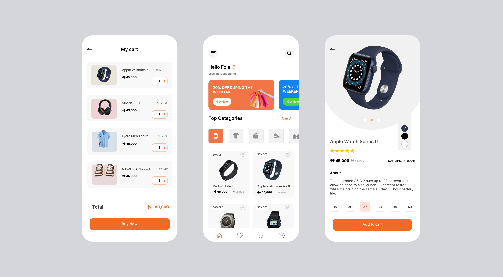

Temmu

User Interface project built with Dart, focusing on creating intuitive and modern user experiences. This project demonstrates skills in Flutter development and UI design principles.
IoT Engineering student at Savonia University, passionate about developing Dart and Flutter applications with a focus on user interfaces and smart home technologies.

User Interface project built with Dart, focusing on creating intuitive and modern user experiences. This project demonstrates skills in Flutter development and UI design principles.

Smart home controller application developed in Dart, enabling seamless control of home devices. This IoT-focused project integrates with various smart home protocols to provide a unified control interface.